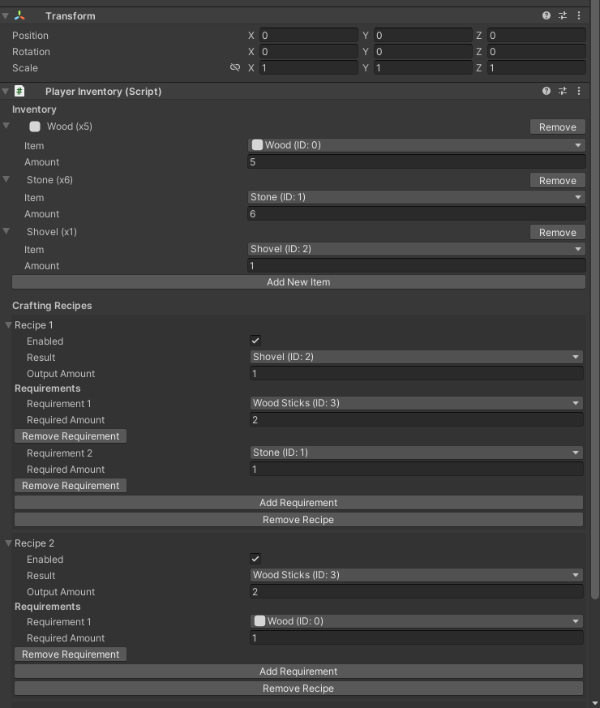
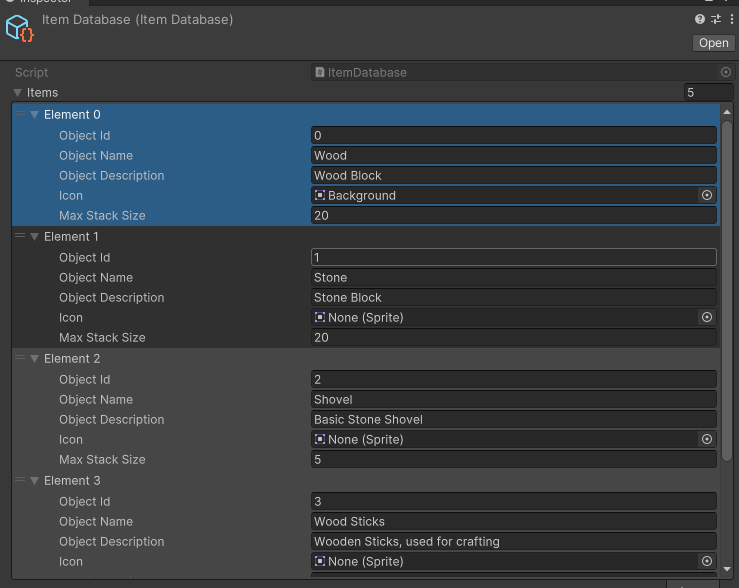
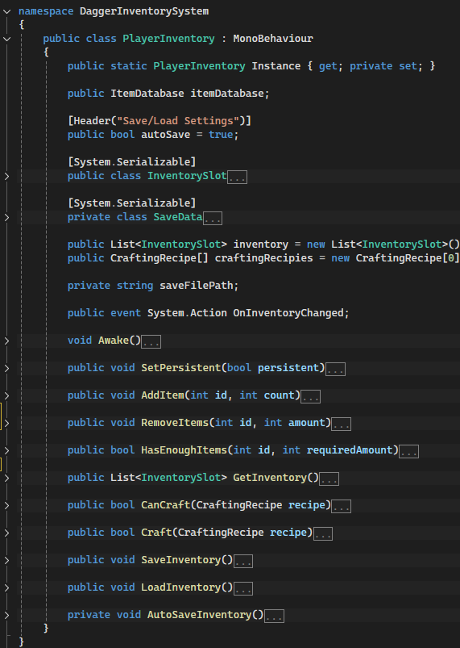

Overview
This tool was my first major step into Unity tool development. Through it, I learned database management, Unity editor scripting, and how to structure modular systems for other developers. While I consider it a learning project, it fills a real niche on the Unity Asset Store and represents a critical advancement in my development skills.
Key features
- Customizable item database with user-defined fields.
- Inventory supporting stackable items and max-stack parameters.
- Editor-based crafting recipe management.
- Modular, API-like calls for inventory management in gameplay code.
- Crafting system integrated directly with the inventory.
- Failure / success responses for accurate game-logic control.
- Optimized for modular implementation across projects.
Screenshots



Add it to your project
A modular inventory + crafting foundation, ready to drop into any Unity game.